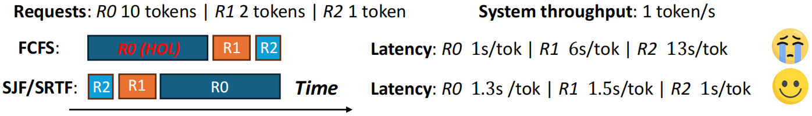
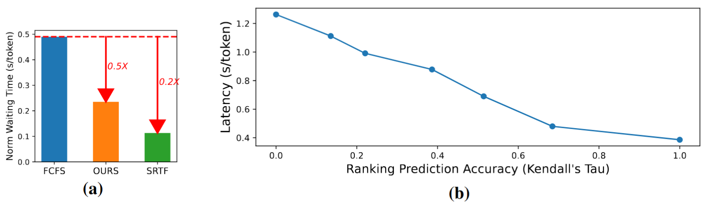
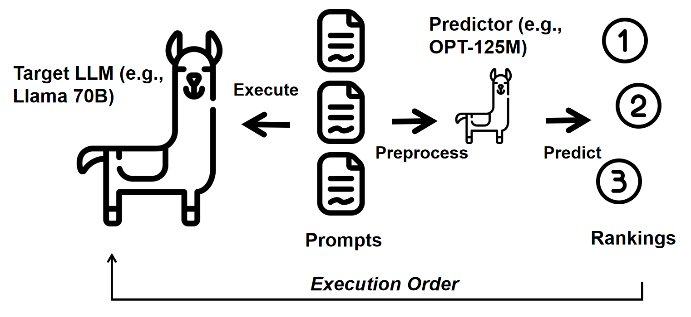
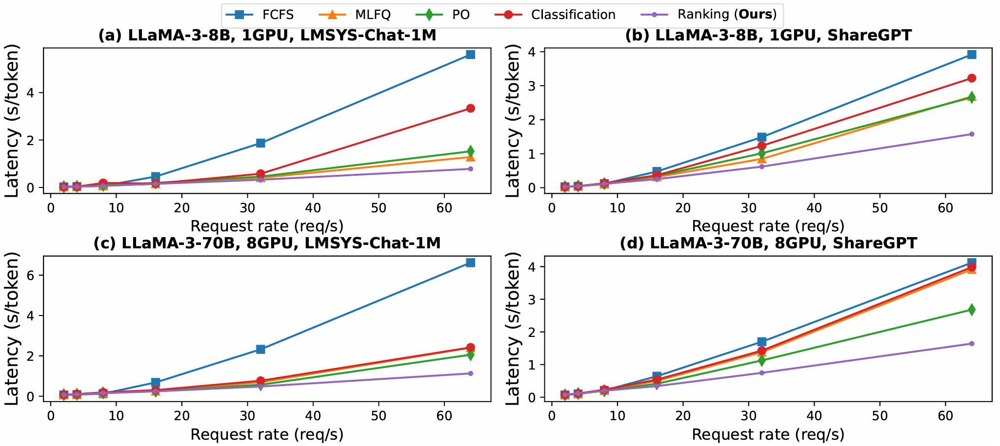
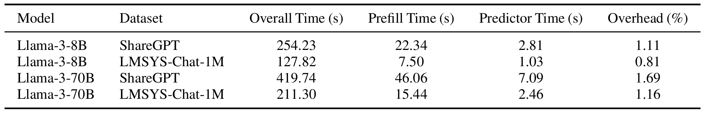

TL;DR: Traditional Large Language Model (LLM) serving systems rely on first-come-first-serve (FCFS) scheduling. When longer requests block shorter ones in the queue, this creates a cascade of delays that severely impacts overall system latency. LLM inference jobs are particularly challenging to schedule due to their highly unpredictable workload and variable output lengths. We developed a novel learning to rank approach that predicts the relative ranking of output lengths, enabling a more efficient Shortest Job First-like scheduling policy. This scheduling approach reduced chatbot latency by 6.9x in high-load scenarios compared to commonly adopted FCFS scheduling.
Head-of-Line Blocking in LLM Serving
LLMs have become critical infrastructure for many Internet services, powering applications used by millions daily. As demand grows, serving LLMs efficiently on GPU clusters becomes essential to handle the sheer volume of user requests. For applications like chatbots, this requires minimizing user-perceived latency while maintaining high throughput to support as many concurrent users as possible.
The key to achieving these serving goals lies in understanding and addressing the unique characteristics of LLM inference (i.e., autoregressive decoding). Unlike traditional serving systems, LLMs generate text token by token, with each new token depending on all previous ones. This autoregressive process continues until the model produces an End-of-Sequence (EOS) token, making generation lengths unpredictable at the start of processing.
This unpredictability creates significant challenges for request scheduling. Traditional first-come-first-serve (FCFS) scheduling, a common strategy in LLM serving, falls short under high workloads due to Head-of-Line (HOL) blocking. In FCFS, sometimes long-running requests monopolize the system, forcing shorter, potentially quicker requests to wait unnecessarily. This not only increases user-perceived latency but also hinders overall system efficiency.
As shown in Figure 1, a long request can block short requests and introduce severe HOL blocking and high latency: We assume there is no prefill time, and the system takes 1 second to generate 1 token. With a First-come-first-serve (FCFS) schedule, the long request R0, which arrives first and takes 10 seconds to generate 10 tokens, will block subsequent shorter requests R1 and R2 for 10 seconds. Hence the latencies of R0, R1, and R2 are $10 / 10 = 1, (10 + 2) / 2 = 6, (10+2+1)/1=13 \mbox{ s / token}$, respectively, perceived by users, with an average latency of $(1+6+13)/3 = 6.67 \mbox{ s / token}$. By contrast, prioritizing shortest requests yields an average latency of $(1.3+1.5+1)/3=1.27 \mbox{ s / token}$ – a $5.3\times$ reduction in average latency.

In traditional computer systems, it is well-established that algorithms like shortest-job-first (SJF) and the preemptive version shortest-remaining-time-first (SRTF) minimize the average latency by prioritizing shorter tasks. However, SJF/SRTF are seldom implemented in LLM services due to the aforementioned challenge: they require requests to be ordered by their remaining generation lengths, which is traditionally considered impossible to predict in advance.
Our key insight is that implementing SJF/SRTF-like scheduling doesn’t require exact length predictions - correctly ranking request lengths in advance is sufficient.
LLM Scheduling by Learning To Rank
Accurate Rankings, Not Exact Lengths, Enable SJF/SRTF-like Scheduling
While SJF/SRTF scheduling traditionally is considered to require exact job length information, we demonstrate that precise lengths aren’t necessary - accurate prediction of generation length rankings is sufficient for effective SJF/SRTF-like LLM scheduling. This insight enables us to approximate SJF/SRTF scheduling by using these rankings to reduce HOL blocking and achieve lower latency in LLM serving.
Our experiments validate this approach through two key metrics. As shown in Figure 2a, our ranking-based scheduler achieves a normalized waiting time that’s 0.5x of FCFS, while remaining only 0.2x away from the optimal SRTF scheduler that has access to perfect length information. To quantify ranking accuracy, we use Kendall’s tau correlation coefficient, which measures how well our predicted rankings align with the true generation lengths. Figure 2b demonstrates that higher Kendall’s tau correlations (more accurate ranking predictions) indicate more accurate predictions compared to the oracle rankings (SJF/SRTF), directly translating to lower per-token latency in the LLM serving system.

To achieve accurate generation length rankings, we leverage Learning to Rank (LTR), a machine learning approach that allows us to predict the relative ordering of completion times for a batch of prompts and use these predictions for efficient scheduling. We introduce it in the following section.
Learning to Rank
Learning to Rank is a supervised machine learning paradigm that trains models to generate rankings of items based on their characteristics. Among the various ranking methodologies, listwise approaches stand out by directly optimizing the ordering of entire sequences, offering advantages over pointwise and pairwise methods that may miss important contextual relationships between items. A notable example is ListMLE, a listwise ranking loss function central to our study.
Let $y$ denote the correct (ground truth) ranking and $x$ denote the set of queries to be ranked. The scoring function $g$ maps from the input space $x$ to predicted rankings $y$. ListMLE minimizes the likelihood function defined as $\mathcal{\phi}(g(x),y)=-\log P\left(y \mid x ; g\right)$, where
$$P(y \mid x ; g)=\prod_{i=1}^n \frac{\exp \left(g\left(x_{y(i)}\right)\right)}{\sum_{k=i}^n \exp \left(g\left(x_{y(k)}\right)\right)} $$Here, $P(y \mid x ; g)$ represents the probability of permutation $y$ given input $x$ and scoring function $g$. $x_{y(i)}$ denotes the element in $x$ corresponding to the $i$-th position in permutation $y$. Intuitively, this formulation captures how well our scoring function $g$ predicts the true ordering $y$ of inputs $x$. The loss function $\mathcal{\phi}(g(x),y)$ represents the negative log-likelihood of observing the correct ranking $y$, where a lower value indicates better prediction accuracy. By minimizing this loss, we train the model to effectively predict the relative positioning of elements in the list.
Method
Our scheduling algorithm leverages the learning to rank to efficiently process requests, as illustrated in Figure 3 and detailed in Algorithm 1 in the paper. The scheduler operates through three key steps:
- A ranking model ($P$) predicts generation lengths for newly arrived requests in each iteration
- All pending requests are sorted based on these predictions
- A running batch is formed following this sorted order while respecting memory and batch size constraints
This ranking-based scheduler operates at the iteration level, making it compatible with established LLM serving techniques like continuous batching and PagedAttention. To prevent long requests from being perpetually delayed, we’ve incorporated starvation prevention mechanisms, which we discuss in detail below.

Training Length Ranking Predictor
For our predictor ($P$), we leverage OPT, a language model capable of processing natural language prompts. Specifically, we use a small variant (OPT-125M) and append an MLP to map its hidden states to ranking scores. While previous methods used classification with bucketing to predict output lengths, we found this approach both challenging and unnecessary - relative rankings are sufficient.
Our training process uses prompt-ranking pairs collected from actual serving batches. We analyzed the predictor’s sensitivity to batch size (Table 5 in the paper) and selected batches of 64 prompts. For each batch, we record both the prompts and their corresponding rankings based on observed generation lengths. After collecting 10K such pairs from real-world serving, we can train the model in less than 5 minutes, making it practical for deployment. This learning-to-rank approach enables the model to directly order prompts by their expected generation length according to the real-world serving data distribution.
Starvation Prevention
While SJF/SRTF scheduling can improve overall latency, it comes with an important trade-off: longer requests might be continuously delayed as the system prioritizes shorter ones. This can lead to frustrating experiences where some users face excessive wait times for their responses.
To address this fairness concern, we focus on a key aspect of user experience: the maximum time users wait between receiving any two tokens of their response. This fairness metric effectively captures user frustration, as users are particularly sensitive to long pauses during response generation - even if the overall completion time is reasonable, frequent or lengthy pauses can make the system feel unresponsive and harm user satisfaction. By optimizing for this metric, we ensure that all users, regardless of their request length, receive their responses with consistent, reasonable pacing.
Building on this insight, we developed an algorithm that dynamically adjusts request priorities based on their waiting time. When a request has been waiting beyond a threshold, we temporarily boost its priority to ensure processing. This simple yet effective approach prevents requests from being indefinitely delayed, resulting in a fairer system that maintains reasonable response times for all users, as demonstrated in our experiments (paper §5.5).
Experiments
Main results
Figure 4 compares the latency of our ranking method against four baselines using two real-world datasets (ShareGPT and LMSYS-Chat-1M) across increasing arrival rates. We evaluated these methods on two latest models: LLaMA3 8B and 70B. At 64 requests/second, our method achieves up to 6.9x lower mean latency than FCFS and 1.5x-1.9x lower than Perception Only (PO).
Both Multi-Level Feedback Queue (MLFQ, a traditional system scheduling approach) and PO (which asks the LLM itself to predict its generation length) suffer from severe HOL blocking because they require initial processing of all requests: PO must run requests through the LLM, while MLFQ needs to process requests before assigning priority levels. The classification approach, which predicts request lengths by assigning them to discrete buckets, optimizes for accuracy rather than ranking and shows sub-optimal performance in both approximating SJF and end-to-end evaluation. Extensive experiments (§5.4 of our paper) demonstrate that our ranking-based method consistently outperforms classification approaches across various configurations by directly learning request length order.

Overhead of the predictor
The predictor adds minimal overhead - less than 2% additional processing time across all settings. We use a 350M parameter predictor for the 70B model and a 125M predictor for the 8B model. While request processing involves both prefill and decode steps, the OPT predictor only performs prefill operations. The overhead increases with longer context lengths, which explains the higher overhead observed on the ShareGPT dataset.

More detailed results can be found in the §5 of our paper.
Get started
Please see our paper for more details. We also invite you to try out our codebase and checkpoints!
Acknowledgement
We extend our gratitude to Junda Chen, Yinmin Zhong, Zhuohan Li, Lanxiang Hu, and Jiangfei Duan for their valuable feedback!
Citation
@article{fu2024efficient,
title={Efficient LLM Scheduling by Learning to Rank},
author={Fu, Yichao and Zhu, Siqi and Su, Runlong and Qiao, Aurick and Stoica, Ion and Zhang, Hao},
journal={arXiv preprint arXiv:2408.15792},
year={2024}
}